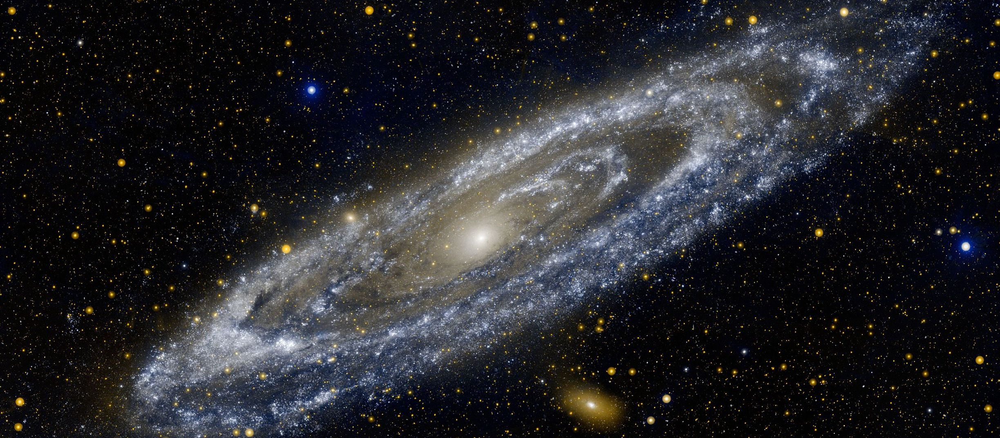

Spiral Galaxies
 Our Sun is a star. It looks much bigger than the other stars in the sky because we’re much closer to it. However, although it’s very special to us, it’s actually a very common kind of star. It’s middle aged and doesn’t have any very unusual characteristics. Almost all stars belong to very large groups called galaxies. Galaxies can contain many millions of stars. Our galaxy is called the Milky Way.There are two main kinds of galaxy: spiral and elliptical. Spiral galaxies tend to be bigger, brighter and contain more stars than elliptical galaxies, and they also have a more complicated structure. Elliptical galaxies contain mostly old, red stars moving about randomly in a cloud.

Left: Stephan's Quintet, a group of 5 galaxies. Can you tell which are spirals and which elliptical? Image credit: NASA, ESA, and the Hubble SM4 ERO Team
Spiral galaxies have several different regions:
- The bulge is a blob of stars in the middle of the galaxy. It looks redder because the stars there are mostly older.
- The disk is quite thin and flat and contains the spiral arms. It looks bluer because the stars there are younger than in the bulge – in fact, some have just been born and are much hotter than the Sun. The Sun is in the Milky Way’s disk, as are all the stars you can see (by eye) at night.
- The Halo surrounds the whole galaxy. It contains a lot less stars than either the bulge or the disk, so it’s not very bright. Some of the stars here are the oldest in the whole galaxy.
It is possible to observe spiral galaxies in visible or ultraviolet light. If you choose visible you will see other stars like the Sun. In ultraviolet light you will see the youngest, hottest stars forming in the galaxy.
Back